En mayo de 2021 se confirmó una intrusión en los dispositivos móviles del Presidente del Gobierno, Pedro Sánchez, y la Ministra de Defensa, Margarita Robles, con extracción de 2,6 GB de datos del terminal presidencial. Todo indicio apunta a la sofisticación de un ataque de nivel estatal, imposible de ejecutar por un actor aislado.
Ciberguerra y Geopolítica 2026
Espionaje estatal, fronteras digitales y la guerra silenciosa que se libra en la infraestructura global de Internet.
01 Espionaje a España
El software NSO Group
Investigaciones de Amnistía Internacional y Forbidden Stories vincularon filtraciones de la DGST marroquí (código clave "Morgan") con el spyware Pegasus, desarrollado por la firma israelí NSO Group. Sin embargo, los Estados evitan atribuciones públicas por cálculo diplomático: acusar formalmente desencadenaría consecuencias graves.
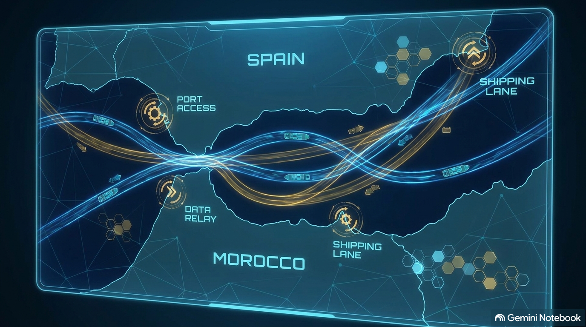
Ceuta, Melilla y el Estrecho
El espionaje entre Estados se da incluso entre aliados, buscando ventajas competitivas y secretos industriales (patentes energéticas, hidrógeno verde). Ceuta, Melilla y el Estrecho de Gibraltar son enclaves críticos de comercio marítimo. Marruecos suele contar con respaldo político y tecnológico de EE.UU. e Israel.
| Dimensión | Factibilidad | Descripción |
|---|---|---|
| Detección del hackeo | Sencilla | Con herramientas adecuadas, es viable determinar si un dispositivo fue comprometido. |
| Análisis de malware | Alta viabilidad | Se pueden aislar muestras de código y rastrear servidores de Comando y Control (C2). |
| Atribución política | Extremadamente compleja | Un Estado no puede acusar a otro sin pruebas irrefutables por el riesgo diplomático. |
02 Actores Globales
Las amenazas se dividen en cibercrimen financiero y Amenazas Persistentes Avanzadas (APT) esponsorizadas por gobiernos.
🇷🇺 Rusia
Ciberguerra destructiva
Uso de wipers (malware que destruye sin opción de rescate) y grupos como Midnight Blizzard, heredera de la tradición de inteligencia de la KGB.
🇨🇳 China
Espionaje industrial
Capacidad masiva de recursos humanos. Misiones continuadas de hasta 10 años infectando embajadas e instituciones clave.
🇺🇸 Estados Unidos
SIGINT y redes
Interceptación de grandes caudales de tráfico mediante operadoras de telecomunicaciones e inteligencia satelital.
🇮🇱 Israel
Spyware de élite
Creación de vectores de infección avanzados (NSO Group) y operaciones tácticas de contrainteligencia.
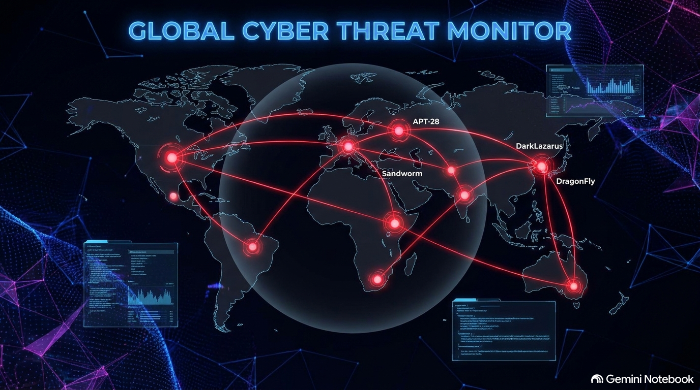
03 Técnicas de Ataque
Zero-Click 0-Click
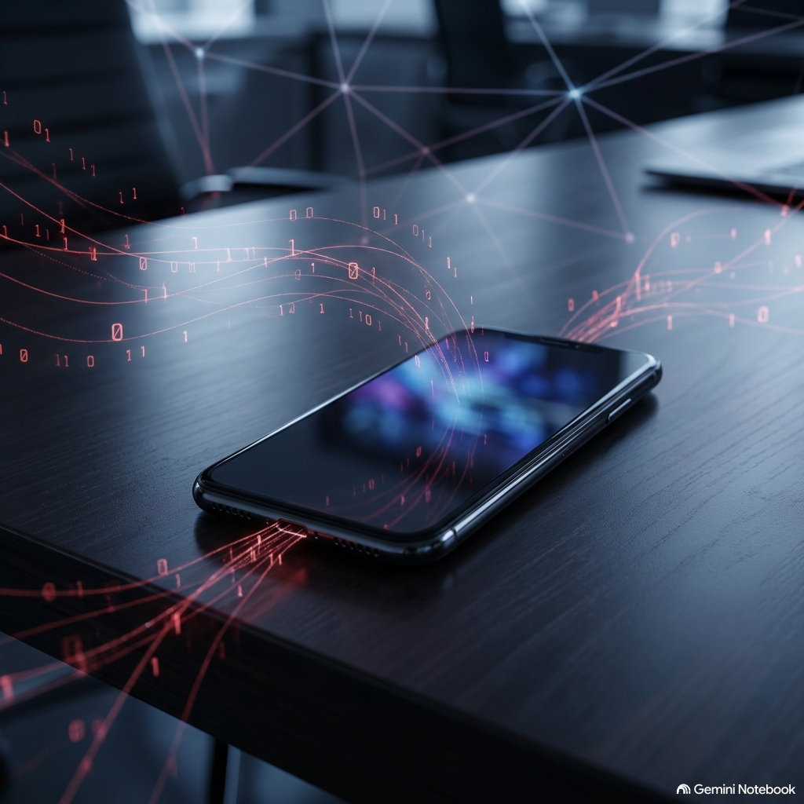
El mensaje llega y ejecuta el código en segundo plano sin notificación ni interacción. Cuesta decenas o cientos de millones de dólares; solo lo usan agencias estatales de inteligencia contra altos cargos, diplomáticos y periodistas.
One-Click 1-Click
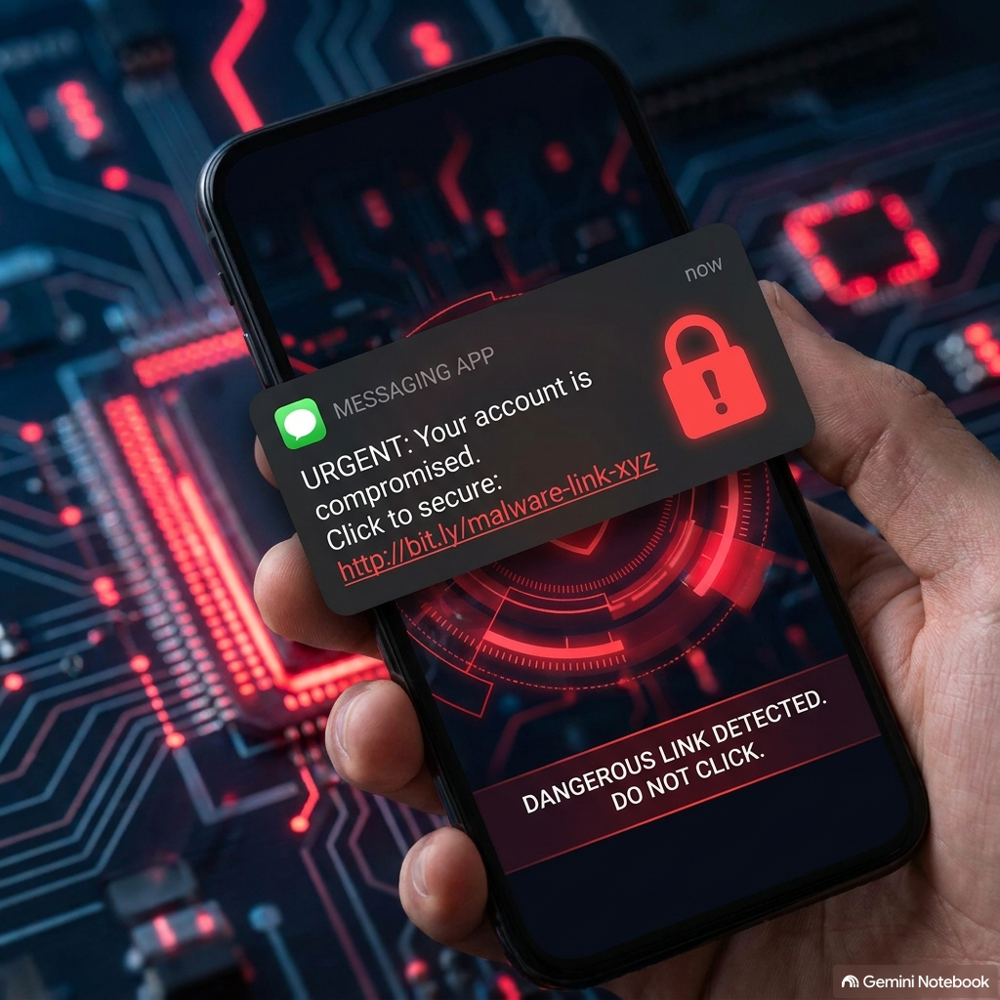
Requiere que la víctima haga clic en un enlace vía WhatsApp, SMS o correo. Coste elevado pero inferior al Zero-Click; necesita ingeniería social previa.
💰 Referencia de mercado: el Gobierno francés contempló adquirir licencias de Pegasus por unos 60 millones de dólares.
04 Guerra Híbrida y Zona Gris
Zona Gris: conjunto de acciones hostiles (ciberespionaje, manipulación mediática, presión migratoria) ejecutadas para desestabilizar a un adversario sin desencadenar un conflicto bélico directo — como los episodios en la frontera de Ceuta.
Las granjas de bots operan en Telegram, X y Facebook combinando verdades, medias verdades y falsedades para polarizar el debate público. Rusia es señalada como actor de vanguardia en esta disciplina.
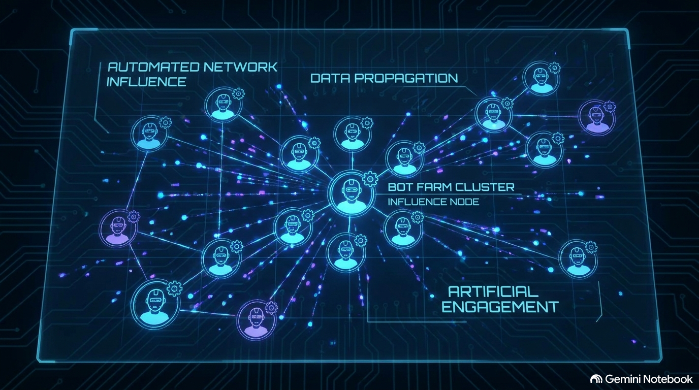
05 Amenazas a Infraestructura Crítica
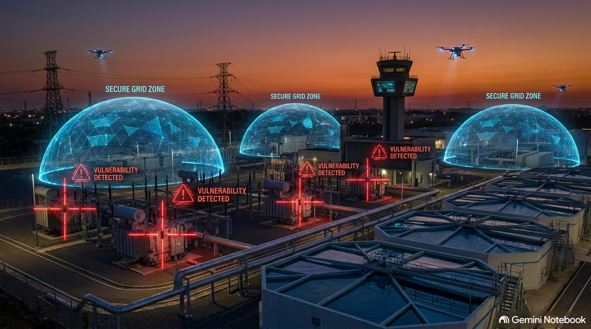
El mayor temor no son los ataques a datos personales, sino el sabotaje a servicios vitales:
- Centrales nucleares
- Redes eléctricas
- Plantas de tratamiento de agua potable
- Presas y sistemas hospitalarios
🗳️ Mark Rivero desaconseja el voto 100% electrónico: no existen garantías auditables suficientes frente a actores estatales hostiles.
06 Ciberseguridad Personal
📶 Wi-Fi pública
Evita redes abiertas: cuidado con portales cautivos falsos. Usa VPN o datos móviles.
🏠 Red doméstica
Crea una red de invitados y aísla tus dispositivos IoT (cámaras, riego).
🎣 Ingeniería social
Cuidado con "Click Fix" y códigos QR manipulados en cargadores o menús.
🔒 Mensajería segura
Signal, WhatsApp o Threema cifran extremo a extremo, pero fallan si el teléfono ya está comprometido. GrapheneOS para máxima exigencia.
07 Futuro y Tendencias
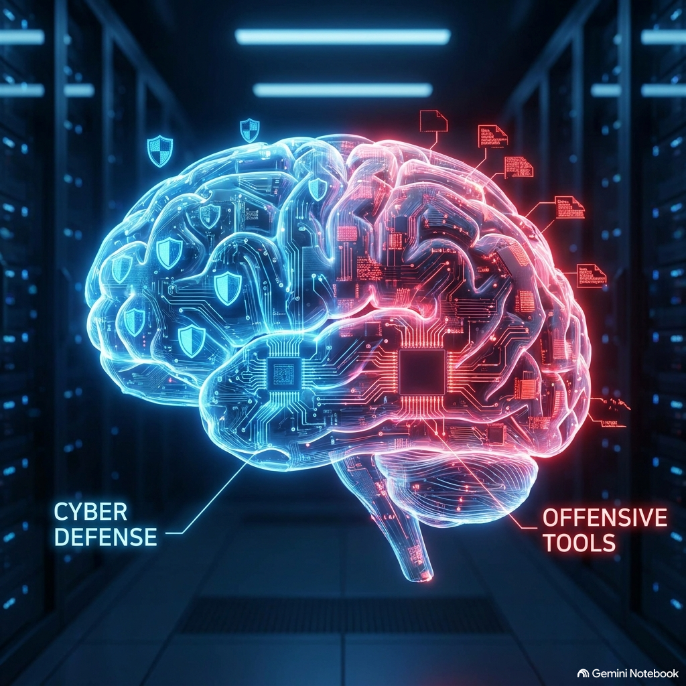
Pruebas de seguridad de firmas como Anthropic demuestran que modelos de IA sin barreras de protección permiten a perfiles con conocimientos técnicos medios igualar capacidades ofensivas que antes requerían más de 15 años de especialización.
La IA generativa se perfila como el arma de doble uso más determinante de la próxima década en ciberseguridad.
08 Galería Visual
Referencias visuales de los temas tratados en el podcast.
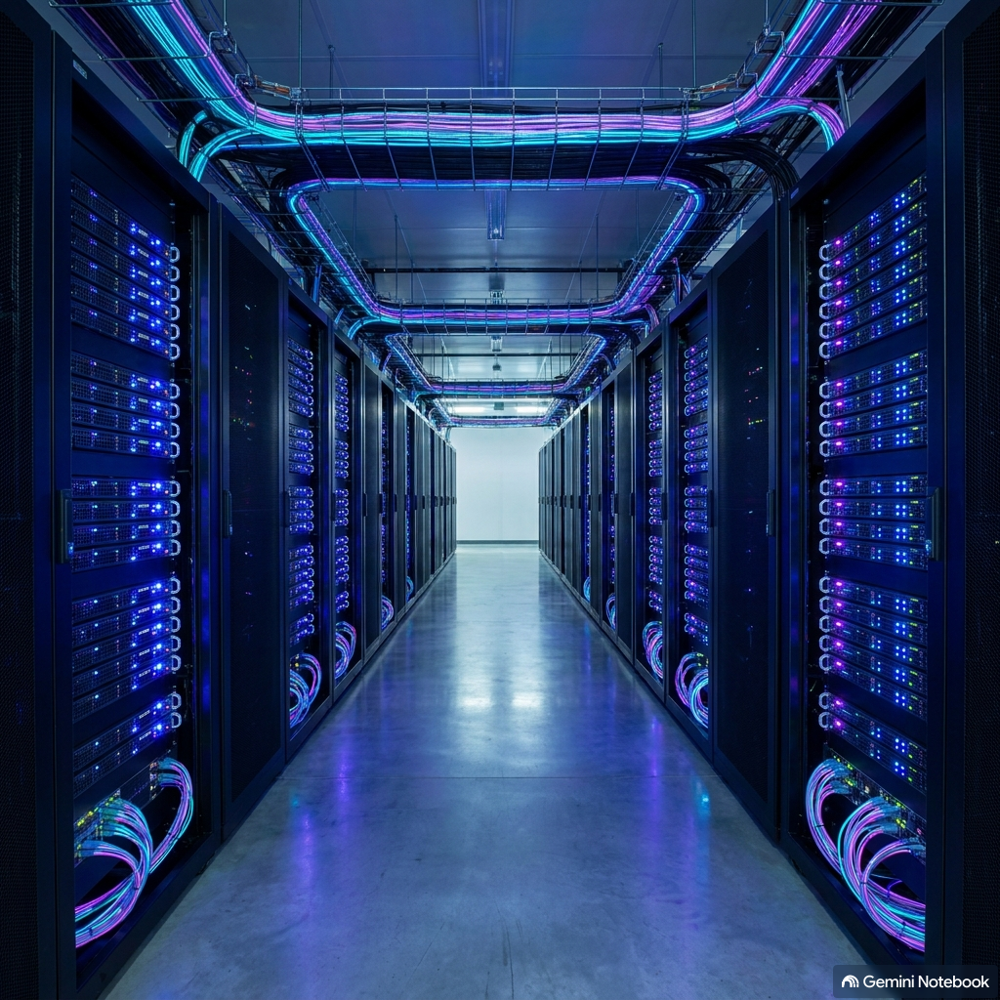
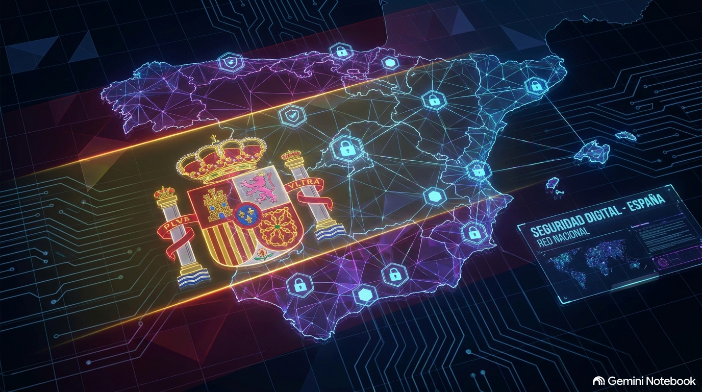
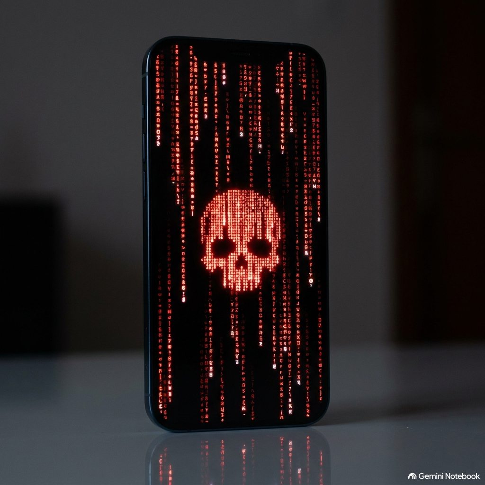
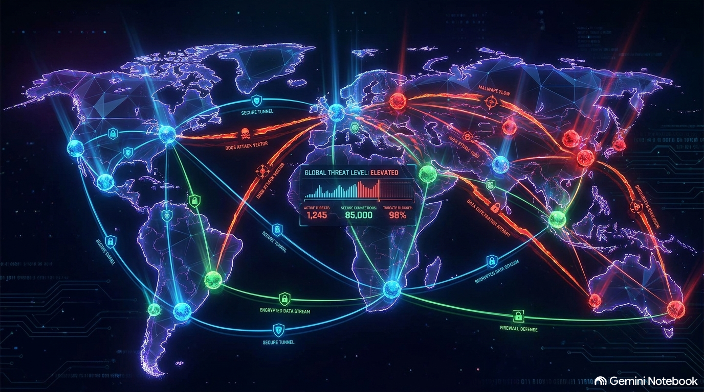
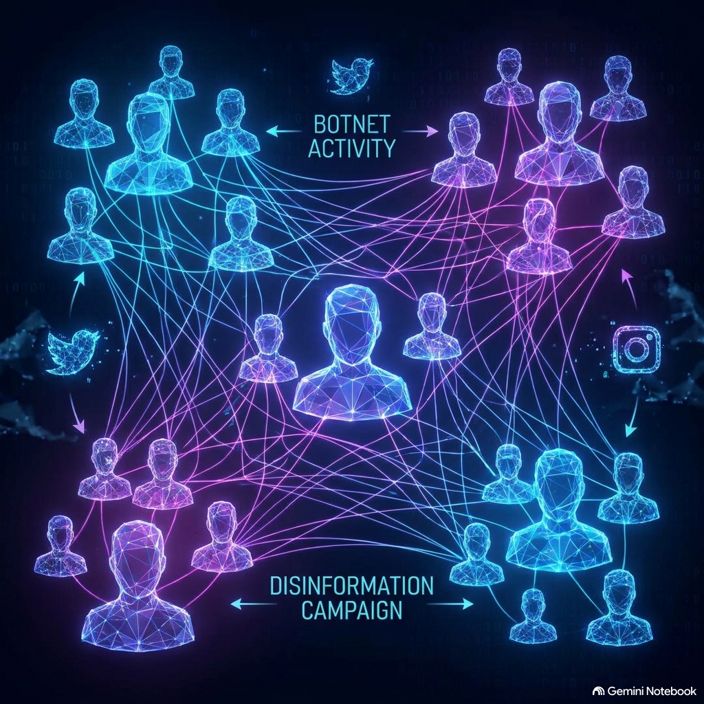
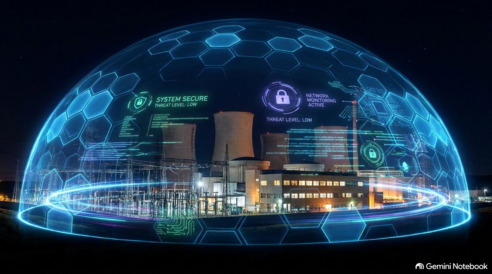